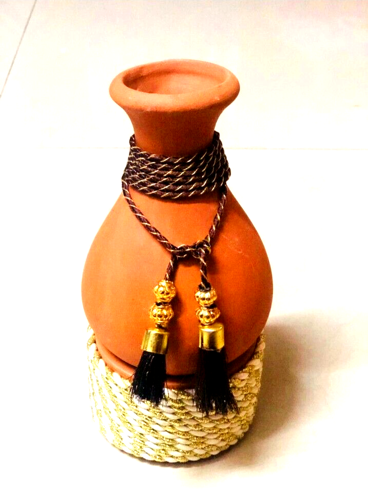
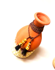

Clay Decorative Flower Vase
R299.99
In Stock (13 items)
The Clay Decorative Flower Vase merges timeless simplicity with artistic flair. Crafted from durable clay, its minimalist design accentuates the natural beauty of your blooms, allowing them to take center stage.
| Weight | 1.5 kg |
| Dimensions | 10 x 10 x 20 cm |
| Material | High-quality clay |
| Indoor/Outdoor | Suitable for both indoor and outdoor use |
| Handcrafted | Each pot is handmade, resulting in unique variations |